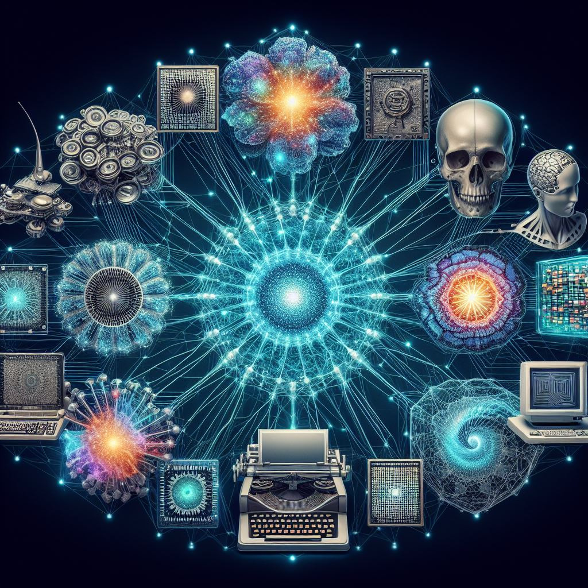
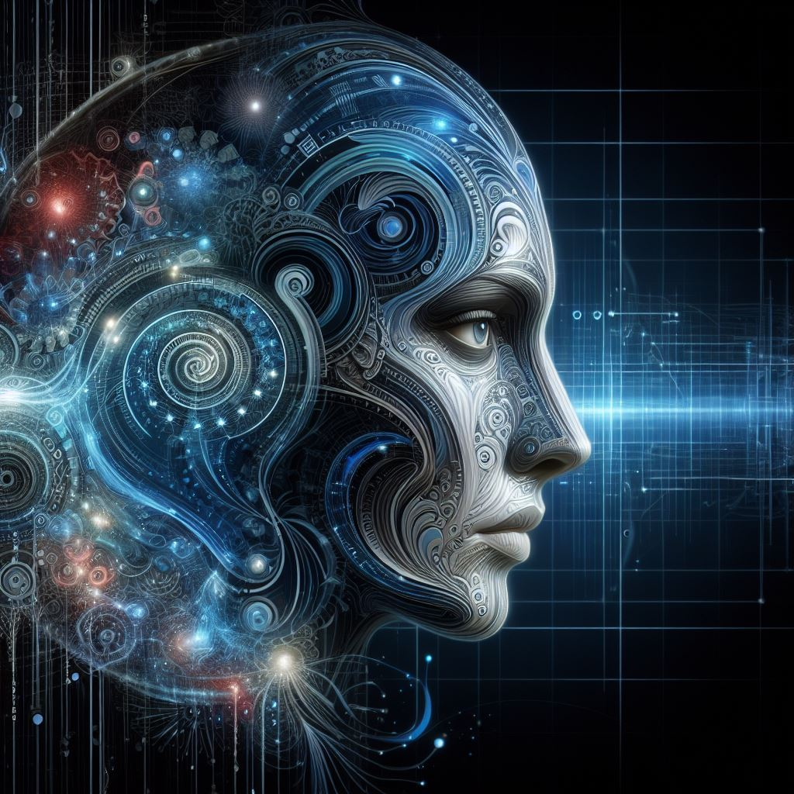

From calculative computation to analysis and memory storage to artificial intelligence, computers have come a long way. We have always found a primary use of computation devices in calculation, and recently through the use of digital computers, the use of these machines has radically scaled up over the last half-century. We now find computer developments of all shapes and sizes: quantum computers, supercomputers, artificial intelligence, the Internet (likely the most significant development of all), and these are rapidly reshaping the world.
A truly staggering development lying in brain chips has recently arisen in Neuralink, with Elon Musk recently stating that the ability to speak using our mouths will become obsolete within the next decade. The days of computers as mere calculation devices are long gone and are ever improving.
One of the most recent (commercial) developments in computers over the last few years, led by OpenAI, has been generative artificial intelligence. ChatGPT has already begun to revolutionise our world, and this trend is continuing, with the creative ability of AI continually expanding into art and the most recent, Sora.

The Artist in AI
Artificial Intelligence harnesses the power of machine learning, a method of using algorithms and data to imitate human learning, with technologies such as Sora beginning each video with an initial blank canvas of static, and by the use of machine learning, combining content relevant to the prompt into a video. Within this method, there do rest some ethical issues, as this obviously lacks the motivation and meaning of an artist, however these issues will be addressed further on. Nonetheless, the power and ability of Sora, and similar arising technologies, is astounding. The speed at which this ‘art’ can be made is rapid, and the content generated matches the prompts precisely, creating an often realistic image with minimal flaw, and evoking emotion, just as would any brilliant piece of art. There is hence no doubt that the work of AI in what would be considered as creative fields is already great, and ever improving. For example, there was a recent short film released by OpenAI, which was made by Shy Kids using Sora, called Air Head. This film was entertaining and emotionally evocative, and used great video, the potential lying in this is great and there lies no doubt that more of this will begin to be seen.
The Author in AI
Not only does AI have brilliance in this artistic arena, which we have seen in video and image generation, but through text-generative AI such as ChatGPT, which has shown its success in all sorts of response-based tasks. Among these lies its storytelling and scripting ability, given a prompt that outlines the desired content of the story (setting, mood, genre, etc.), generative AI does very well in generating a good story, be that in a novel format or a script format. At this stage, great guidance is still needed to be given during its story creation, and how long this will remain so is a valid question, however there is no doubt that it is a brilliant tool, if nothing else. This then begins to raise the question of the role of AI, over the next decade and beyond, in film-making and other forms of artistic story creation as there is obvious value in this technology as a tool to be used in these fields.

The Assistant Director in AI
Will actors, artists and writers soon become obsolete?
I think not, because the roles of these are not fulfilled by artificial intelligence and will likely not be so for a while, however AI does carry a valuable role in this field, as an overall helper. By looking at the ability of Sora, generated video ranges from 30 seconds to a minute, and the content is not able to, and I believe will not be able to for a while, create vast segments of a movie. However, it does have the highly valuable ability to very quickly generate story and character art which would take great amounts of time by animators and other people of the creative team, which would allow far greater efficiency. As well as this, generative AI software such as ChatGPT would be of invaluable use in brainstorming story ideas, and also getting an inspiration for certain parts of the story together.
By combining these abilities of artificial intelligence, as well as others that we do not yet consider but likely will in the coming years, film-making and similar areas of both art and storytelling gain an almighty tool.
The Human Touch In the Dawn of AI
Artificial intelligence is a stunning tool, it is efficient, fast and creates high-quality work, however it lacks something, something that we value, and something that will keep AI from dominating art for a long while. Humanity. AI can create all of this brilliant content, yet it needs guidance, it has no purpose (yet) and requires a prompt. Unlike artificial intelligence, when a human creates a piece of art, or a story, it has meaning and a motivation for its creation, a purpose, and is created often with an intention to evoke an emotion. We, unlike AI, have humanity, and there is no human in AI.